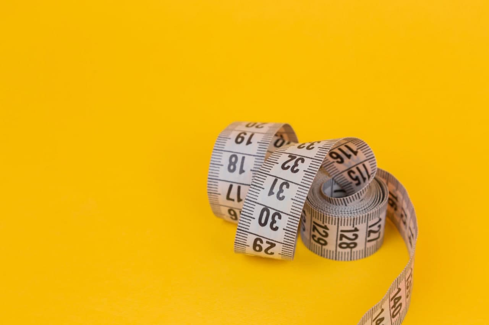

One way to lose weight quickly is to cut back on sugars and starches, or carbohydrates. This could be with a low carb eating plan or by reducing refined carbs and replacing them with whole grains.
When you do that, your hunger levels go down, and you generally end up eating fewer calories .
With a low carb eating plan, you’ll utilize burning stored fat for energy instead of carbs.
If you choose to eat more complex carbs like whole grains along with a calorie deficit, you’ll benefit from higher fiber and digest them more slowly. This makes them more filling to keep you satisfied.
A 2020 study confirmed that a very low carbohydrate diet was beneficial for losing weight in older populations .
Research also suggests that a low carb diet can reduce appetite, which may lead to eating fewer calories without thinking about it or feeling hungry .
Note that the long-term effects of a low carb diet are still being researched. It can also be difficult to adhere to a low carb diet, which may lead to yo-yo dieting and less success in maintaining a healthy weight.
There are potential downsides to a low carb diet that may lead you to a different method. Reduced calorie diets can also lead to weight loss and be easier to maintain for longer periods of time.
If you opt for a diet focusing instead on whole grains over refined carbs, a 2019 study correlated high whole grain with lower body mass index (BMI) .
To determine the best way for you to lose weight, consult your doctor for recommendations.
a protein source
fat source
vegetables
a small portion of complex carbohydrates, such as whole grains
To see how you can assemble your meals, check out:
this low carb meal plan
this lower calorie meal plan
these lists of 101 healthy low carb recipes and low calorie foods

Eating a recommended amount of protein is essential to help preserve your health and muscle mass while losing weight .
Evidence suggests that eating adequate protein may improve cardiometabolic risk factors, appetite, and body weight, .
Here’s how to determine how much you need to eat without eating too much. Many factors determine your specific needs, but generally, an average person needs :
56–91 grams per day for the average male
46–75 grams per day for the average female
Diets with adequate protein can also help:
reduce cravings and obsessive thoughts about food by 60%
reduce the desire to snack late at night by half
make you feel full
In one study, people on a higher protein diet ate 441 fewer calories per day .
meat: beef, chicken, pork, and lamb
fish and seafood: salmon, trout, and shrimp
eggs: whole eggs with the yolk
plant-based proteins: beans, legumes, quinoa, tempeh, and tofu
Don’t be afraid to load your plate with leafy green vegetables. They’re packed with nutrients, and you can eat very large amounts without greatly increasing calories and carbs.
broccoli
cauliflower
spinach
tomatoes
kale
Brussels sprouts
cabbage
Swiss chard
lettuce
cucumber
Don’t be afraid of eating fats.
Your body still requires healthy fats no matter what eating plan you choose. Olive oil and avocado oil are great choices for including in your eating plan.
Other fats such as butter and coconut oil should be used only in moderation due to their higher saturated fat content.
Exercise, while not required to lose weight, can help you lose weight more quickly. Lifting weights has particularly good benefits.
By lifting weights, you’ll burn lots of calories and prevent your metabolism from slowing down, which is a common side effect of losing weight.
Try going to the gym three to four times a week to lift weights. If you’re new to the gym, ask a trainer for some advice. Make sure your doctor is also aware of any new exercise plans.
If lifting weights is not an option for you, doing some cardio workouts such as walking, jogging, running, cycling, or swimming is very beneficial for weight loss and general health.
Both cardio and weightlifting can help with weight loss.
zein&moutasem